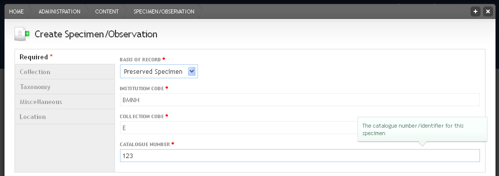

Locations and specimens¶
Specimen data in a Scratchpad conform to the Darwin Core (version 1.2.1) format recommended by TDWG (the Taxonomic Databases working group) and GBIF.
They are separated into two content types: location and specimen, which allows you to connect different specimens at the same location.
Adding a location¶
- From the Admin menu go to Content

Click Add next to Location
Enter a LOCATION IDENTIFIER. The location identifier needs to be unique because it is used for referencing this location while adding specimens.
Either click on the Point tab for the map to add a point to the map with a left mouse click (delete is with right click) or enter the latitude and longitude in decimal degrees (coordinate system WGS84) in the field below the map.

Click on the Extra Fields tab for additional optional fields.

Select a COUNTRY from the drop down menu
Use the LOCALITY field to enter information that is not covered in any of the other fields
Click Save

Location node
Adding a specimen¶
From the Admin menu go to Content
Click the Add link next to Specimen/Observation.
There are five different vertical tabs:
- Required
- Taxonomy
- Collection
- Miscellaneous
- Location
Each of these tabs has different fields that can optionally be completed in order to create a new specimen record.
Fill out the fields under the Required tab. The two code fields together with the catalogue number generate a unique ID for this specimen record that is used as the specimen title
The Taxonomy tab contains the basic information about the identification of your specimen. The important field here is the second one, TAXONOMIC NAME, which is linked directly to all your site’s vocabularies
Fill in the information under the Collection and Miscellaneous tabs
Under the Location tab, select the location you created earlier.
If you haven’t created a Location previously you may add one here by clicking on Create a new Location and use it here option. This new Location will be available to use for other specimens/observations in the future.
In addition to the fields above, you can also add a media file to your specimen record

Click Save
You will be redirected to view your specimen, including thumbnails of any media you attached and a map of the location.
If you tagged the specimen with a taxonomy term, you can now find the specimen records under the Specimens tab of the classification view.
Cloning specimen¶
Click on the Clone tab to create a similar specimen from the same location by just changing the data in the CATALOGUE NUMBER field.
In practice most people will (at least initially) want to enter locality and specimen records in bulk - see Import specimens.